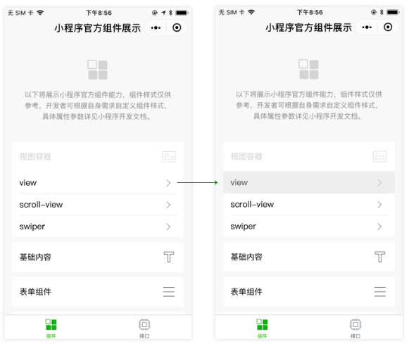

通常页面会摆放一些button按钮或者view区域，用户触摸按钮之后会触发下一步的操作。这种情况下，我们要对触摸这个行为给予用户一些响应。如图4-17所示，当我们手指触摸了button文字所在的cell区域时，对应的区域底色变成浅灰色，这样用户就可以知道小程序是有及时响应他的这次触摸操作，用户就不会很迷惑。

图4-17 触摸区域底色变成灰色响应用户的触摸操作
小程序的view容器组件和button组件提供了hover-class属性，触摸时会往该组件加上对应的class改变组件的样式。
代码清单4-1 通过hover-class属性改变触摸时的样式
/*page.wxss */
.hover{
background-color: gray;
}
<!--page.wxml -->
<button hover-class="hover"> 点击button </button>
<view hover-class="hover"> 点击view</view>
对于用户的操作及时响应是非常优秀的体验，有时候在点击button按钮处理更耗时的操作时，我们也会使用button组件的loading属性，在按钮的文字前边出现一个Loading，让用户明确的感觉到，这个操作会比较耗时，需要等待一小段时间。
图4-18 button文字前出现loading
代码清单4-2 设置button的loading属性
<!--page.wxml -->
<button loading="{{loading}}" bindtap="tap">操作</button>
//page.js
Page({
data: { loading: false },
tap: function() {
// 把按钮的loading状态显示出来
this.setData({
loading: true
})
// 接着做耗时的操作
}
})